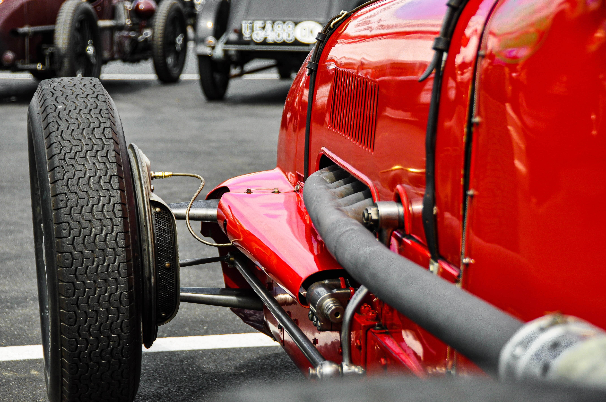
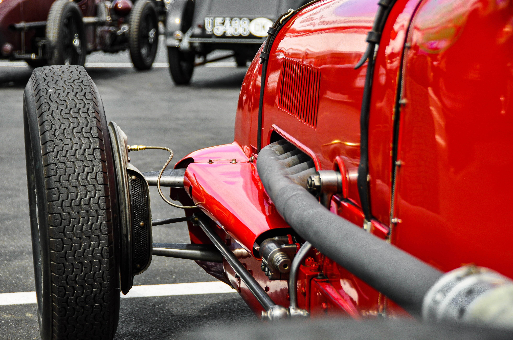

How does F1 incorporate Computing?
Machine Learning is a field devoted to using data to improve upon a set of tasks. It has had a great impact on F1. F1 cars have an ECU, which is essentially a small but very powerful computer that controls, processes and transmits vast quantities of data from the F1 cars to the teams. The ECU is like a control system for the engine, gearbox, throttle, clutch, etc. It feeds data (telemetry) to the teams. Not only on the track, but ML has helped F1 develop as a sport off the track as well, it uses data gathered from previous races and previous models of F1 cars to help build the fastest and safest car under the regulations.
Data Gathering
The entire sport of F1 requires immense amounts of data to function, whether that be to provide it to the people watching on race day, or for engineers on the pitwall to see how the car is functioning, or, and most importantly, to develop the car and enhance it to give out the best results on race day. It's safe to say that modern computing has gone a long way in terms of helping the people who design the car, faster and also importantly, safer.
Data on Race Day
The teams gather data from the sensors on race day and can then use this data as it comes through to make changes to their strategies and amend there cars In a 2-hour race, about 750 million bits of data is sent to the pitwall.
Data off the track
When a car is being developed, to get the best working car under the proper regulations, engineers and designers have to account for a million different possibilities. It also allows the teams to have data that may not have been previously available in the older seasons on the conditions of the track, the unpredictability, the weather, and many other bits and tweaks.
Wind Tunnel and Computational Fluid Dynamics
Modern F1 cars are required to produce a very high amount of downforce to keep the car on the track. This is where the wind tunnel and CFD come in, they help in designing the aerodynamic capability of the car and make little improvements and tweaks to help improve the movement of the car under heavy downforce. As all tracks are different, some requiring less downforce and some more, the Wind Tunnel helps in developing the car to make it suitable for all tracks and designing the various intricate pieces into the perfect design
CFD and Wind Tunnel usage by the FIA
F1, like any other sport, requires excitement to maintain engagement, and nothing in car race is more engaging than close battles between two extremely skilled drivers matched up against each other in close-to-perfect machinery. However, in recent times, with added downforce, when cars follow each other, they tend to lose downforce,as close to 50%. This affects the wheel-to-wheel racing. So, the FIA (governing body) has started using the CFD and wind tunnel to make models of cars that are able to follow each other closer and thus allow more action in a race.
CFD for the teams
The teams don't necessarily use the wind tunnel like the FIA can. Each team is pitted against the other and all of them are trying to create the fastest car possible. So they make use of the wind tunnel to come up with various models of there design and try to pit them against each other. However, in recent times, the wind tunnel usage is limited for each team as they go progressively higher in the championships, so the teams have started to use CFD instead, which generates a simulation of the track on a day and then shows how the model of the car would behave under such conditions.
Fan Engagement
No Sport in the world can be possible without fans, and therefore, F1 has to make the sport as user-friendly and engaging to the people as possible. A previously unlikely way to do this has come to boost the ranking of f1 as a sport in recent times, which is computing, the telecasting team present on the day, takes the data gathered and broadcasts it over for all the fans to view. It has become highly developed over time, with various new features like the exact distance between two cars, the time before one can pull off an overtake, etc.
On-screen engagement
The most basic things present on the screen of an F1 viewer can make the overall experience of watching a race much better than normal. A normal screen will show the time gap between the racers, the position they are in, what there tyre compounds are, and various other things during the race. This not only helps in keeping a fan engaged, but actually teaches them about the sport, making them more invested in it and brings them back to watch the next race.
More intricate data onboard
The most basic things, however, aren't the only exciting part about a formula 1 weekend. There is so much potential and data present in the race for fans to see that just the timing screens and compounds aren't enough to have the perfect viewing. Thus, F1 has started to come up with new data variables that show a more intricate comparison between the cars. Like the exact distance between the two cars, what the proper pit strategy is, how the race could potentially play out, and many other forms of data that make the viewer experience so great.